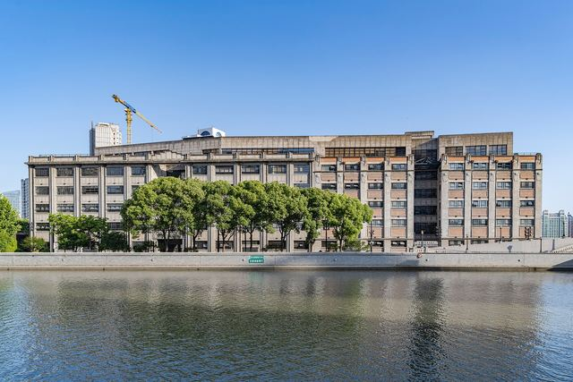

War memorial museum in a 1930s bank warehouse · Jing’an
Sihang Warehouse Battle Memorial 上海四行仓库抗战纪念馆
See the west wall, with about 420 bullet holes from 1937. Free, no booking; shut on Mon 30 Nov.
LikelyNo Nov notice foundAmap (opens Amap, or its website, in a new tab)